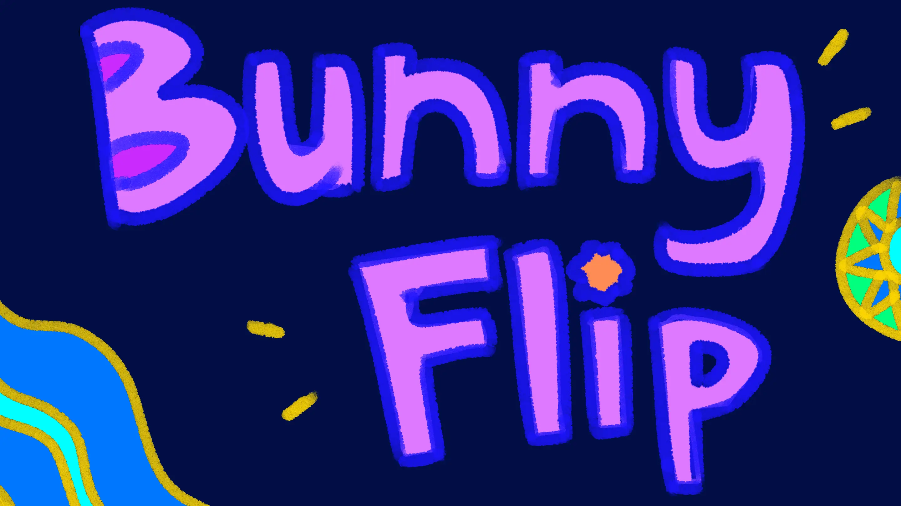
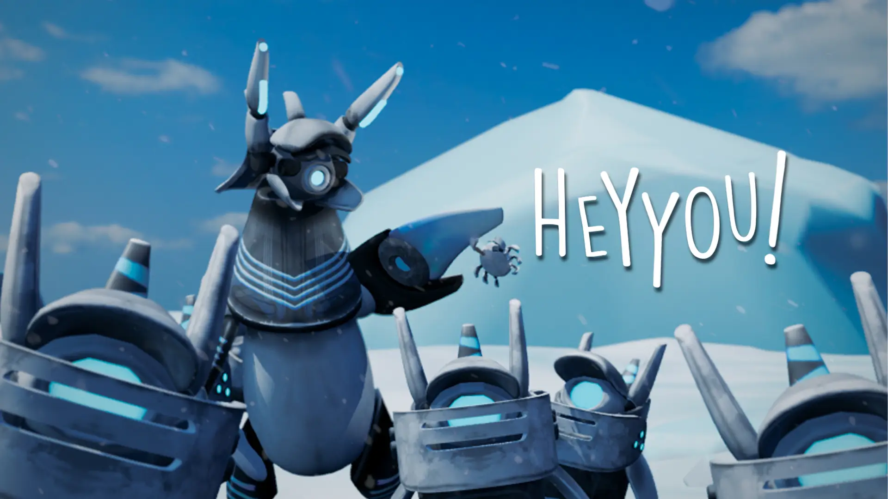
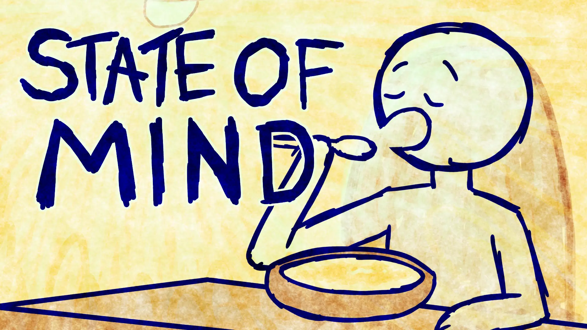
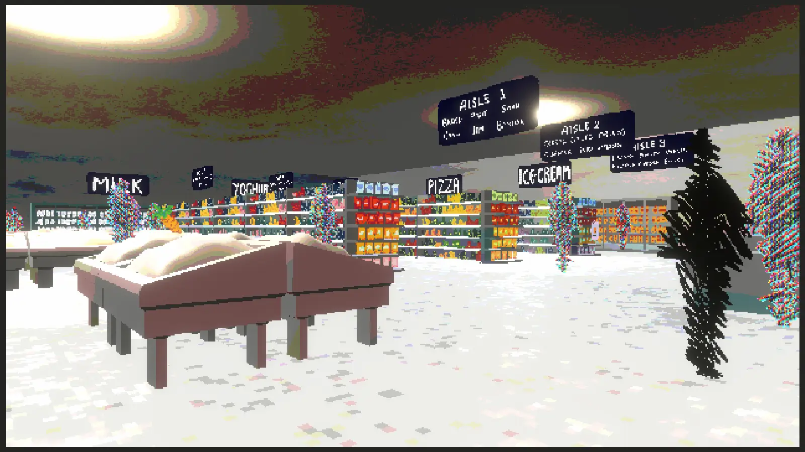
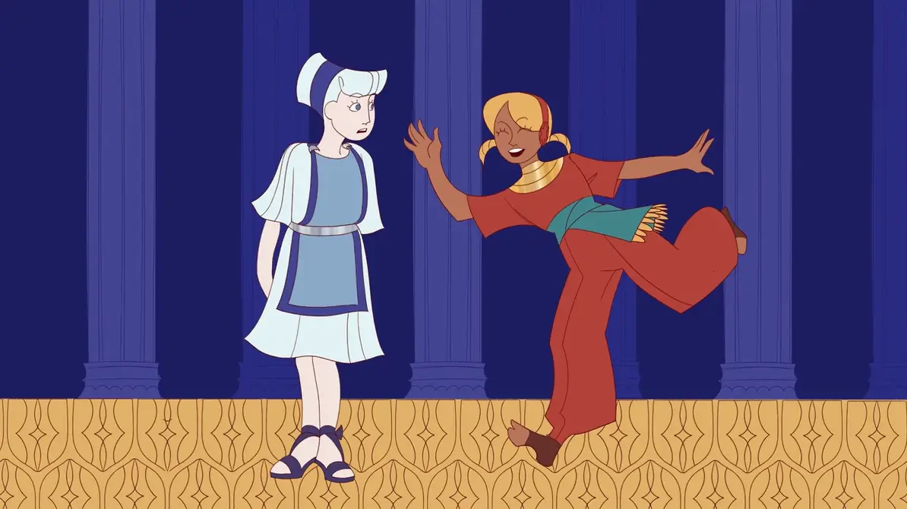
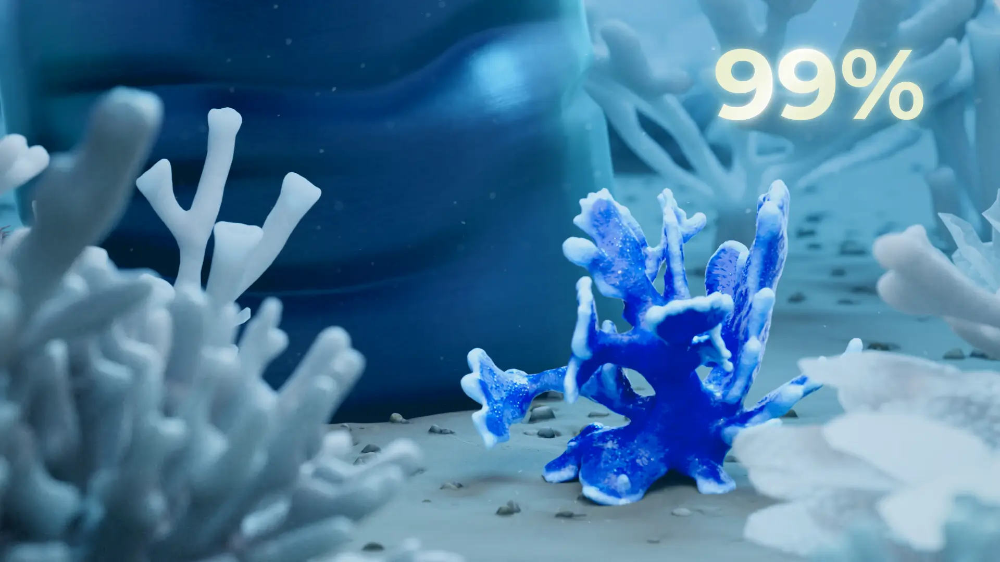
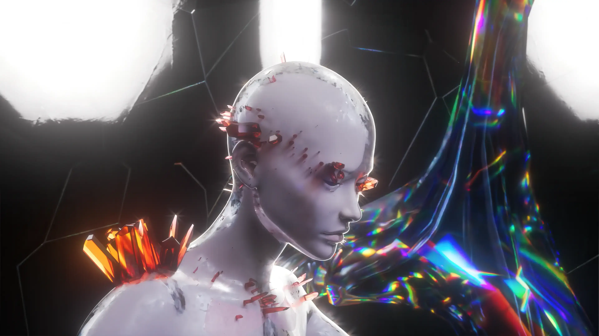
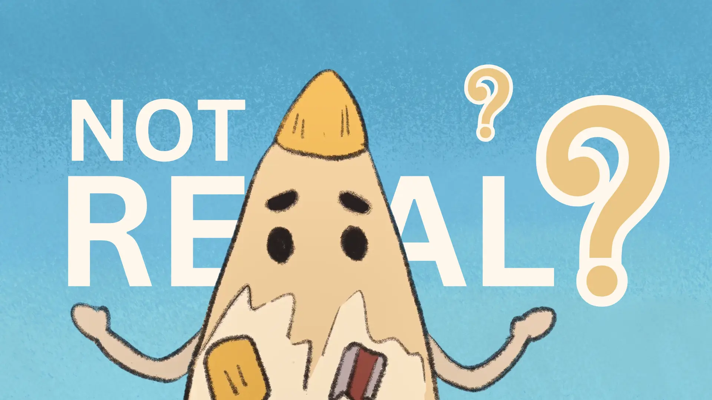
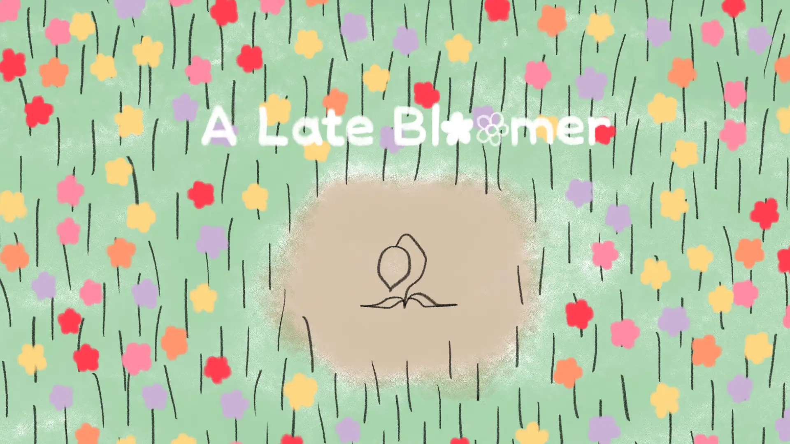

Visible / Invisible is an interdisciplinary symposium exploring how animation, games & interactive practices reveal experiences, systems and meanings that remain hidden.









Marketing LeadTrang Hoang Phuong
Brand & Graphic Design LeadSon Tran Thai
Graphic Designers (Social Media / Content)Clarissa Lucita Dias, Yishan Ma, An Ngo, Han Ming Voon, Jing Yan
Print Designers (Poster, Catalogue)Son Tran Thai, Clarissa Lucita Dias, Bingying Wang, Quy Luong Le Uyen, Yishan Ma, Minkai Chen
Social Media CoordinatorHolly Lamprey, Han Ming Voon, Ryanaldo Frenico Putra
Social Media Video CreatorThisuka Marasinghe, Kim Ngan Pham, Han Ming Voon, Heqing Shang, Jing Yan, Shoukang Chen
Industry Outreach CoordinatorHeqing Shang, Trang Hoang Phuong, Rongzhen Wan
Copywriter & Press Release ManagerTrang Hoang Phuong, Holly Lamprey, Rongzhen Wan
Production Design LeadShijie Gui, Kaihong, Yunpeng Qi
Spatial DesignerKaihong Wang, Shifu Zhao, Yunpeng Qi, Xinyi Chen, Yilin Liu, Xiaoqing Zhang
Signage & Wayfinding DesignerQuy Luong Le Uyen, Shifu, Yunpeng Qi, Renzi Tao, Thao Nguyen, Jade Ng
Lead Technical CoordinatorDineth Meehitiya
AV & Digital Experience TechnicianAdrian Frichitthavong, Thisuka Marasinghe, Dineth Meehitiya
Production AssistantShifu Zhao, Quy Luong Le Uyen, Yishan Ma
Accessibility CoordinatorCandice Savira, Shifu Zhao
Recording & Archive TechnicianThisuka Marasinghe, Nguyen Nguyen Thao
Content LeadRyanaldo Frenico Putra
Presenter LiaisonCandice Savira, An Ngo
Digital Producer (Programme)Zhefeng Wang, Sean Tovey, Jade Ng, Xiaoya Yu
Digital Producer (Website)Adrian Frichitthavong, Bingying Wang, Zhefeng Wang
Copy Editor / ProofreaderHeqing Shang, Ryanaldo Frenico Putra, Sean Tovey
Abstract Review CoordinatorEsthefania Morantes Simanca
Feedback & Evaluation LeadEsthefania Morantes Simanca
Photographers (Social Media & On Site)Jiawen Hu, Renzi Tao, Holly Lamprey, Shoukang Chen, William Hopper
Videographers & EditorsJiawen Hu, Nguyen Nguyen Thao, Jing Yan, Dineth Meehitiya, Holly Lamprey, Shoukang Chen
Project ManagerEsthefania Morantes Simanca, William Hopper
Schedule CoordinatorWilliam Hopper
Venue LiaisonNhu
On-site Logistics ManagerJiawen Hu
Inter-Committee Communications OfficerCandice Savira
Session Chair / ModeratorCandice Savira